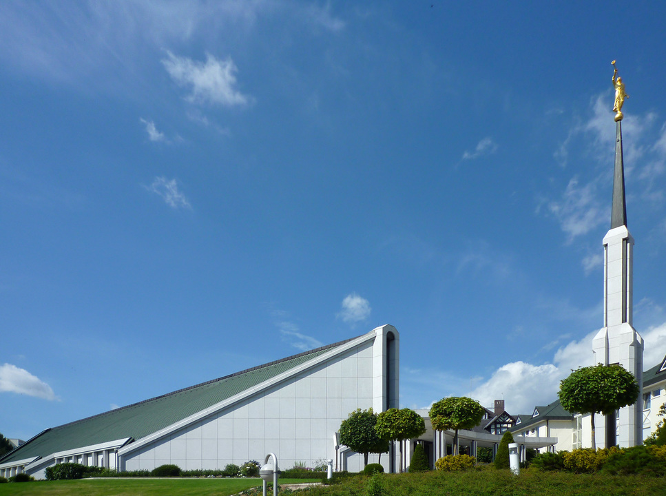

Frankfurt, Germany Temple
Address:
Telephone:
Services:
History:
Construction of the Frankfurt Germany Temple met opposition during its early planning phases, but President Gordon B. Hinckley told local officials that they would not regret their decision to permit construction of the temple. It "will be a thing of beauty in this lovely area," he said. "It will be a source of pride to local residents, who will come to speak of it as 'our temple.'"
President Gordon B. Hinckley broke ground for the Frankfurt Germany Temple the day after he concluded the dedicatory services for the Freiberg Germany Temple. The next day, he dedicated the Stockholm Sweden Temple.
The Frankfurt Germany Temple and Freiberg Germany Temple originally belonged to separate nations: Frankfurt to the Federal Republic of Germany (West Germany) and Freiberg to the German Democratic Republic (East Germany), a socialist state created by the Soviet Union. The two nations reunited in 1990, three years after the dedication of the Frankfurt Germany Temple.
During its week-and-a-half open house period, the Frankfurt Germany Temple was toured by some 70,000 visitors.
As an apostle, Elder Ezra Taft Benson was called to minister in Europe in 1945, following the devastation of World War II, and again in 1963 to serve as president of the European Mission, headquartered in Frankfurt. In August 1987, it was his special treat to return to Frankfurt—now as president of the Church—to dedicate the Frankfurt Germany Temple.
The Frankfurt Germany Temple was dedicated in eleven sessions over three days with approximately 12,570 members attending, largely coming from the nations of Germany, Belgium, the Netherlands, and France.
On September 7, 2015, the Frankfurt Germany Temple closed for renovation and enlargement. A few months later, a new stake center was dedicated that had been under construction next to the temple, and the former meetinghouse was demolished to make room for a missionary housing facility. The discovery of foundation issues during the renovation doubled the anticipated construction time two years to four years. An underground baptistry was added as part of the remodel.
Ordinance Schedule:
Session Schedule:
Closure Schedule:
Weather in Atlanta
In the next five days
- Day 1
- Day 2
- Day 3
- Day 4
- Day 5